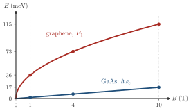
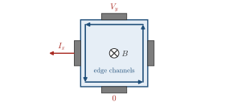

Page 1 of 13 of this session
4.1 Where the quantum Hall state shows up
Why does the same quantized Hall conductance appear in GaAs and in graphene, but up to very different temperatures? We will see that the value of the plateau is fixed by topology. The material sets the spin and valley degeneracy of the Landau levels and their spacing, which grows as \(B\) in GaAs and as \(\sqrt{B}\) in graphene.
\[\sigma_{xy} = \frac{e^2}{h}\, C, \qquad C = \sum_{n\ \text{filled}} \frac{1}{2\pi}\int_{\text{BZ}} \Omega_n(k)\, d^2k. \tag{3.4}\]
This is the Hall conductivity of a set of filled bands, from Section 3.5. The Chern number \(C\) is the integral of the Berry curvature \(\Omega_n\) of the filled bands over the Brillouin zone, divided by \(2\pi\). It is built from the wavefunctions only, and for a gapped system it is an integer.
The quantum Hall state is not the property of one specific material. It is a state of matter that a whole family of two-dimensional electron systems can realize, and each of these systems has its own energy scale and temperature scale.
Semiconductor quantum wells, historically gallium arsenide (GaAs), were the first platform. In these systems the electrons are essentially parabolic electrons, with the ordinary quadratic dispersion, and the relevant energy scale grows linearly with the magnetic field. This gives \(1.7\) meV per tesla, so a few millielectronvolts at a few tesla and \(17\) meV at \(10\) T. A plateau needs a thermal energy much smaller than this spacing, and disorder broadens the levels, so quantum Hall physics in GaAs needs temperatures of the order of one kelvin.
Two-dimensional materials, and graphene above all, realize the same physics but with the Dirac electrons of Section 2.11 instead of parabolic ones. As we derive in Section 4.10, the energy scale then grows as the square root of the field and not linearly. It is roughly one order of magnitude larger, around 100 millielectronvolts at 10 T. This is high enough that the quantum Hall effect of graphene can be measured even at room temperature.
For all these platforms the common point is the one of equation (3.4). An observable, the Hall conductance, is quantized to an integer times \(e^2/h\), and this quantization comes from topology and not from the chemistry of a specific material.

To put numbers on the two ladders, Schematic 4.2 shows the spacing of the levels of GaAs and the first level of graphene against the field, with the constants of the two materials.

In graphene the spacing of the lowest levels is large, and the abstract of the article below calls this promising for a standard of electrical resistance. In a large device of graphene grown on SiC, the Hall resistance is quantized within \(1\times10^{-9}\) for fields down to \(3.5\) T, and also at temperatures as high as \(10\) K. The abstract lists these as separate conditions, and it does not say that they hold at the same time. That this spacing is the \(E_1\) of Schematic 4.2 is our reading. The measurement is in this article.
The two energy scales of the Landau levels are
\[\hbar\omega_c=\frac{\hbar eB}{m^*}\ \text{(GaAs)},\qquad E_1=v\sqrt{2\hbar eB}\ \text{(graphene)}.\]
Here \(m^*\) is the effective mass of GaAs and \(v\) the velocity of graphene. We multiply \(B\) by 4. How do the two scales change?
Show the answers
- A. ✗ False
This is false. For \(m^*=0.067\,m_e\) the GaAs spacing \(\hbar\omega_c\) is about \(1.7\) meV at 1 T and \(6.9\) meV at 4 T, which is a factor 4 and not 2.
- B. ✓ True
This is true. A linear law multiplies the spacing by the same factor as the field, and a square-root law by its square root. For graphene with \(v=10^6\) m/s, \(E_1\) goes from about 36 meV at 1 T to 73 meV at 4 T.
- C. ✗ False
This is false. This swaps the two laws. The graphene level \(E_1\approx 36\,\mathrm{meV}\sqrt{B/\mathrm{T}}\), for \(v=10^6\) m/s, is 36 meV at 1 T and 73 meV at 4 T, a factor 2 and not 4.
4.2 Measuring the Hall conductance
The experiment itself is simple to describe. We take a two-dimensional system, apply a voltage along one in-plane direction, which we call \(y\), and measure the current that flows along the perpendicular in-plane direction, \(x\). The ratio of this transverse current to the applied voltage is the Hall conductance, and this is the quantity that becomes quantized in the quantum Hall regime.
The geometry that we have in mind is the one in Schematic 4.3, a square sample with four contacts.

A real device for this measurement is a two-dimensional electron gas (2DEG) with several finger gates in contact with it. A voltage is applied between a top gate and a bottom gate, and the current is measured between two gates placed along \(x\), with all the connections made through metallic leads. The geometry of the device does not add new physics beyond what we need for the concepts, so we will not discuss it further. From here on we work with the ideal two-dimensional system.
The quantum Hall plateaus of graphene survive to much higher temperatures than those of GaAs. Why?
Show the answers
- A. ✗ False
This is false. The plateau at \(2e^2/h\) has the same value in GaAs and in graphene, and the value is an integer times \(e^2/h\) in both. What differs is the temperature up to which it survives.
- B. ✓ True
This is true. At 10 T the GaAs spacing is about 17 meV and the first graphene gap is about 115 meV, roughly seven times larger. The plateau needs the thermal energy to be small compared with the gap.
- C. ✗ False
This is false. Graphene on a substrate has charge puddles and impurities, and the plateaus survive anyway. What matters is a large gap to the next level, and not the absence of disorder.
Compute the level spacing \(\hbar\omega_c=\hbar eB/m^*\) of GaAs, with \(m^*=0.067\,m_e\), and the first level \(E_1=v\sqrt{2\hbar eB}\) of graphene, with \(v=10^6\) m/s, both at \(B=10\) T. Give each one in meV and as a temperature \(E/k_B\), and give their ratio.
Solution
For GaAs we put the numbers in SI units,
\[\hbar\omega_c=\frac{(1.055\times10^{-34}\,\mathrm{J\,s})(1.602\times10^{-19}\,\mathrm{C})(10\,\mathrm{T})}{0.067\times9.109\times10^{-31}\,\mathrm{kg}}=2.77\times10^{-21}\,\mathrm{J}=17.3\,\mathrm{meV}.\]
With \(k_B=8.617\times10^{-5}\) eV/K this is \(201\) K. For graphene the square root is \(\sqrt{2\hbar eB}=1.84\times10^{-26}\) kg m/s, and we multiply it by \(v\),
\[E_1=(10^6\,\mathrm{m/s})(1.84\times10^{-26}\,\mathrm{kg\,m/s})=1.84\times10^{-20}\,\mathrm{J}=115\,\mathrm{meV},\]
which is about \(1330\) K. The ratio is \(115/17.3=6.6\).
These temperatures are not the temperatures where the plateaus disappear. A plateau needs the thermal energy to be much smaller than the gap, and disorder broadens the levels, so the plateaus are lost far below them. What the numbers give is the ratio, meaning that at 10 T the gap of graphene is 6.6 times larger than the spacing of GaAs, and this is why its plateaus survive to higher temperatures.
- In Sections 4.9 and 4.10 we derive the two ladders of Landau levels, linear in \(B\) and as \(\sqrt{B}\).
- In Section 4.20 the quantized Hall conductance appears at zero field, in real materials.
- In Section 5.2 the flux quantum \(h/2e\) of a superconductor is a second macroscopic readout of \(e\) and \(h\), next to the plateaus of this section.